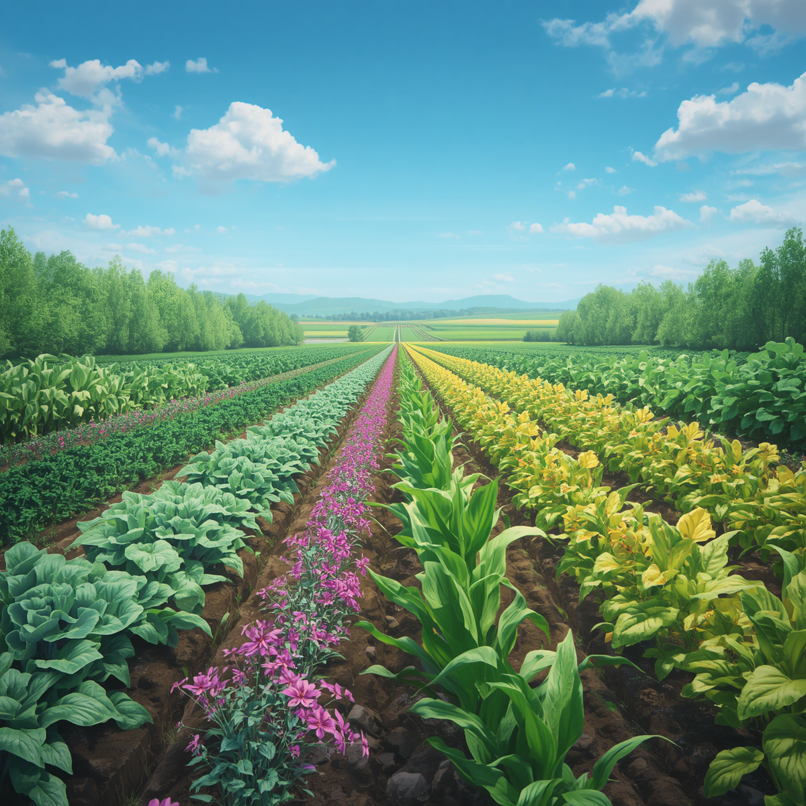
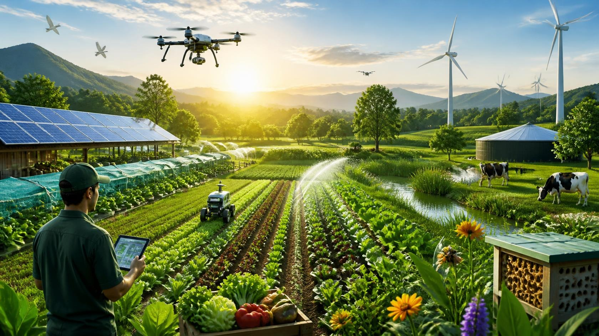
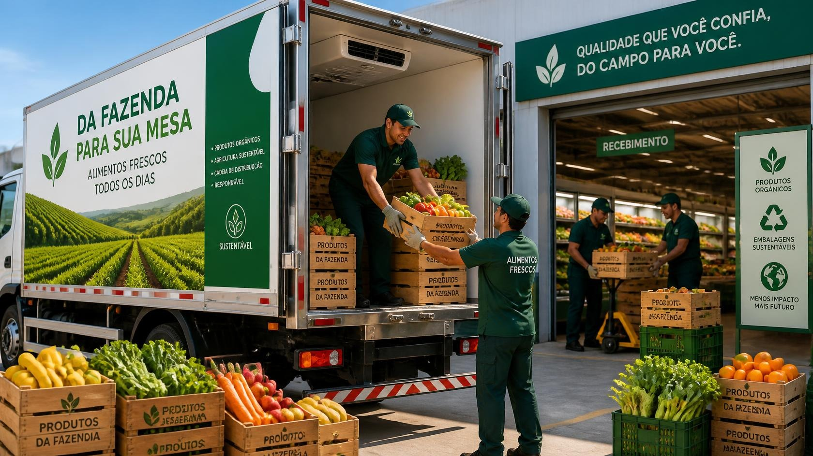

Galeria do Campo
Imagens relacionadas à agricultura, tecnologia e sustentabilidade ajudam a visualizar como esses conceitos estão presentes no campo.




A agricultura sustentável busca conciliar a produção de alimentos, a geração de renda e a conservação dos recursos naturais. Isso envolve práticas que ajudam a proteger o solo, utilizar a água de maneira eficiente, conservar a biodiversidade e reduzir impactos ambientais. No Brasil, a atividade agropecuária possui grande importância econômica e social. De acordo com o Censo Agropecuário 2017 do IBGE, o país possuía 5.073.324 estabelecimentos agropecuários.
O mesmo levantamento identificou 3.897.408 estabelecimentos classificados como agricultura familiar, correspondendo a 76,8% do total. A agricultura familiar também reunia aproximadamente 10,1 milhões de pessoas ocupadas, mostrando sua importância para o trabalho e para a produção no campo.
Segundo o Censo Agropecuário 2017 do IBGE, 76,8% dos estabelecimentos agropecuários brasileiros eram classificados como agricultura familiar. Essa categoria possui grande importância social e econômica, especialmente na geração de trabalho no meio rural.
O Censo Agropecuário 2017 registrou 1.229.907 tratores nos estabelecimentos agropecuários brasileiros. O número representa um crescimento de 49,9% em relação ao levantamento realizado em 2006.
O Censo Agropecuário 2017 registrou aproximadamente 15,1 milhões de pessoas ocupadas nos estabelecimentos agropecuários brasileiros. O campo continua sendo uma importante fonte de trabalho e renda para milhões de pessoas.
A tecnologia permite acompanhar diferentes características da produção agrícola e tomar decisões baseadas em dados. Recursos como sensores, sistemas de posicionamento, drones e inteligência artificial fazem parte do desenvolvimento da agricultura de precisão.
Drones podem ser utilizados para obter imagens aéreas das plantações. Essas imagens ajudam a identificar diferenças no desenvolvimento das culturas e podem auxiliar no monitoramento de áreas agrícolas.
Sistemas de inteligência artificial podem analisar grandes quantidades de dados relacionados ao clima, ao solo e às plantações. Essas informações podem apoiar decisões e melhorar o planejamento agrícola.
Sensores conectados podem acompanhar informações como umidade do solo, temperatura e condições ambientais. Esses dados podem contribuir para um uso mais eficiente dos recursos disponíveis.
Imagens de satélite permitem observar grandes áreas agrícolas e acompanhar mudanças na vegetação. Esse tipo de informação é utilizado em diferentes sistemas de monitoramento agrícola e ambiental.
O plantio direto, a cobertura do solo e a rotação de culturas são práticas que podem contribuir para reduzir a erosão, melhorar a estrutura do solo e conservar sua capacidade produtiva.
A agricultura é uma das principais atividades consumidoras de água. Segundo a FAO, aproximadamente 72% das retiradas de água doce no mundo estão relacionadas à agricultura. Por isso, melhorar a eficiência da irrigação é um importante desafio para a sustentabilidade.
Fontes renováveis, como a energia solar, podem ser utilizadas em propriedades rurais para diferentes finalidades, incluindo o funcionamento de equipamentos e sistemas de bombeamento.
A conservação de áreas naturais, matas ciliares e outros ambientes importantes contribui para a proteção da biodiversidade e para a manutenção de serviços ecossistêmicos importantes para a agricultura.
Alterações na temperatura e no regime de chuvas podem afetar o planejamento agrícola e aumentar os riscos relacionados a períodos de seca, excesso de chuva e eventos climáticos extremos.
A disponibilidade de água é fundamental para a produção agrícola. O uso eficiente desse recurso é necessário para diminuir desperdícios e aumentar a segurança hídrica.
A erosão e a perda de matéria orgânica podem comprometer a qualidade do solo. Práticas conservacionistas ajudam a manter sua estrutura e capacidade produtiva.
A agricultura de precisão utiliza informações sobre o campo para aplicar recursos de maneira mais localizada. A proposta é utilizar dados para melhorar o planejamento e evitar aplicações desnecessárias.
Práticas regenerativas procuram melhorar a qualidade do solo, aumentar a presença de matéria orgânica e favorecer processos naturais que contribuem para a conservação dos recursos.
Máquinas e sistemas automatizados podem realizar tarefas agrícolas com maior controle e precisão, enquanto sensores fornecem informações para acompanhar as condições da produção.
O gráfico apresenta dados reais do Censo Agropecuário 2017 do IBGE, comparando o número total de estabelecimentos com aqueles classificados como agricultura familiar.
A tecnologia pode auxiliar produtores no monitoramento das plantações, no acompanhamento das condições ambientais e no planejamento das atividades agrícolas.
Informe uma quantidade de árvores para visualizar uma estimativa educativa de absorção de CO₂. O resultado é apenas uma estimativa, pois a quantidade de carbono absorvida varia de acordo com espécie, idade, clima, solo e condições de crescimento.
Qual das práticas abaixo contribui para a conservação do solo?
O Censo Agropecuário 2017 registrou mais de 1,2 milhão de tratores nos estabelecimentos agropecuários brasileiros. A mecanização é uma das transformações tecnológicas observadas no campo.
Sistemas de irrigação planejados e tecnologias de monitoramento podem ajudar a adequar o fornecimento de água às necessidades das culturas, contribuindo para o uso mais eficiente desse recurso.
Práticas como plantio direto, rotação de culturas e cobertura vegetal podem ajudar a reduzir a erosão e conservar características importantes do solo.
Imagens relacionadas à agricultura, tecnologia e sustentabilidade ajudam a visualizar como esses conceitos estão presentes no campo.



Os principais dados estatísticos utilizados neste site foram baseados em fontes institucionais e públicas.